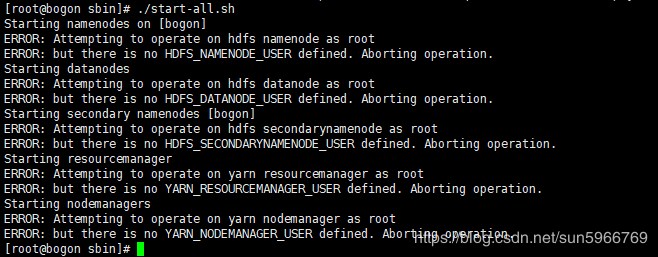
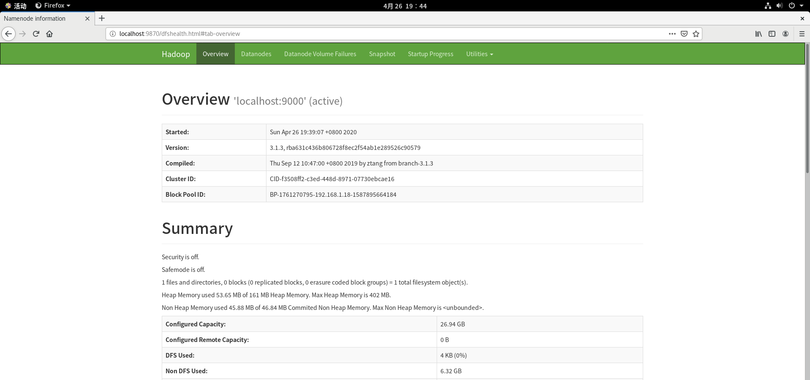
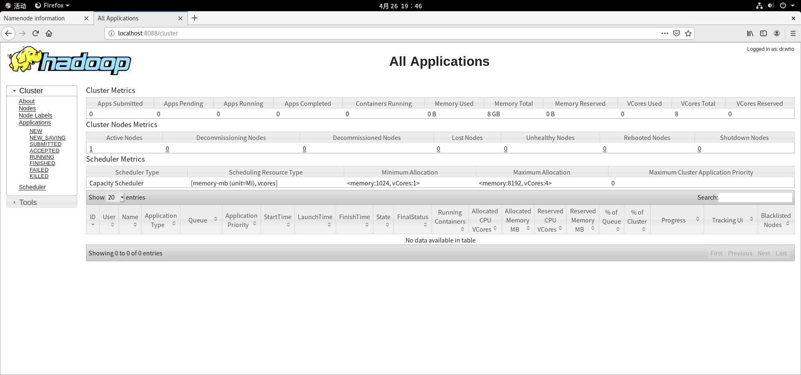

Hadoop 是一个由 Apache 基金会所开发的分布式系统基础架构。用户可以在不了解分布式底层细节的情况下，开发分布式程序。充分利用集群的威力进行高速运算和存储。Hadoop 实现了一个分布式文件系统（Hadoop Distributed File System），简称 HDFS。HDFS 有高容错性的特点，并且设计用来部署在低廉的（low-cost）硬件上；而且它提供高吞吐量（high throughput）来访问应用程序的数据，适合那些有着超大数据集（large data set）的应用程序。HDFS 放宽了（relax）POSIX 的要求，可以以流的形式访问（streaming access）文件系统中的数据。Hadoop 的框架最核心的设计就是：HDFS 和 MapReduce。HDFS 为海量的数据提供了存储，而 MapReduce 则为海量的数据提供了计算 。
操作流程
- 关闭防火墙。
- 安装 JDK。
- 修改 主机名 和 IP的映射关系。
- 安装 Hadoop。
关闭防火墙
运行
systemctl status firewalld命令查看当前防火墙的状态。- 如果防火墙的状态参数时 inactive，则防火墙为关闭状态。
- 如果防火墙的状态参数是 active，则防火墙为开启状态。本示例中防火墙为开启状态，因此需要关闭防火墙。
关闭防火墙。如果防火墙为关闭状态可以忽略此步骤。
如果您想临时关闭防火墙，运行命令
systemctl stop firewalld。说明 这只是暂时关闭防火墙，下次重启 Linux 后，防火墙还会开启。
如果您想永久关闭防火墙，运行命令
systemctl disable firewalld。说明 如果您想重新开启防火墙，请参见 firewalld 官网信息 。
安装 JDK
依次运行以下命令下载并解压 JDK。
1
mkdir /usr/java
1
tar -zxvf jdk-8u181-linux-x64.tar.gz -C /usr/java/
修改环境变量。
1
vi /etc/profile
1
2export JAVA_HOME=/usr/java/jdk1.8.0_181
export PATH=$PATH:$JAVA_HOME/bin重新加载环境变量脚本。
1
source /etc/profile
验证 Java 是否生效。
1
java -version
查询系统 JDK。
1
2
3rpm -qa | grep java
或者
rpm -qa | grep jdk删除状态自带的 JDK。
例如
rpm -e --nodeps java-1.7.0-openjdk-1.7.0.75-2.5.4.2.el7_0.x86_64
修改 主机名 和 IP 的映射关系
1 | vim /etc/sysconfig/network |
1 | NETWORKING=yes |
1 | vim /etc/hosts |
1 | 192.168.182.128 sjd ###注意前面的IP地址为服务器的地址，可通过ifconfig查看 |
安装 Hadoop
依次运行以下命令下载并解压 Hadoop 安装包。
1
wget http://archive.apache.org/dist/hadoop/common/hadoop-3.2.0/hadoop-3.2.0.tar.gz
1
cd /usr/local/software
1
tar -zxvf hadoop-3.2.0.tar.gz
修改环境变量。
1
vi /etc/profiel
1
2export HADOOP_HOME=/bigdata/hadoop-3.1.1
export PATH=.:$HADOOP_HOME/bin:$JAVA_HOME/bin:$PATH重新加载环境变量脚本。
1
source /etc/profile
修改 Hadoop 的 5 个配置文件。
1
cd /usr/local/software/hadoop-3.2.0/etc/hadoop
hadoop-env.sh
1
export JAVA_HOME=/usr/java/jdk1.7.0_65
core-site.xml
1
2
3
4
5
6
7
8
9
10<!-- 制定HDFS的老大（NameNode）的地址 -->
<property>
<name>fs.defaultFS</name>
<value>hdfs://itcast01:9000</value>
</property>
<!-- 指定hadoop运行时产生文件的存储目录 -->
<property>
<name>hadoop.tmp.dir</name>
<value>/itcast/hadoop-2.4.1/tmp</value>
</property>hdfs-site.xml
1
2
3
4
5<!-- 指定HDFS副本的数量 -->
<property>
<name>dfs.replication</name>
<value>1</value>
</property>mapred-site.xml
1
mv mapred-site.xml.template mapred-site.xml
1
2
3
4
5<!-- 指定mr运行在yarn上 -->
<property>
<name>mapreduce.framework.name</name>
<value>yarn</value>
</property>yarn-site.xml
1
2
3
4
5
6
7
8
9
10<!-- 指定YARN的老大（ResourceManager）的地址 -->
<property>
<name>yarn.resourcemanager.hostname</name>
<value>itcast01</value>
</property>
<!-- reducer获取数据的方式 -->
<property>
<name>yarn.nodemanager.aux-services</name>
<value>mapreduce_shuffle</value>
</property>
初始化（格式化） HDFS
1
cd /usr/local/softare/hadoop-3.2.0/bin
1
./hdfs namenode -format
- Hadoop3.x 升级 JDK为 1.8+，所以在格式化 namenode 时若 JDK版本不匹配会报错。
- 如果没有修改自己的IP和主机名的映射，在namenode格式化会报错，需参见 5.修改 主机名 和 IP的映射关系 ，配置 本机主机名和 IP 映射关系。
配置 ssh 免密登录。
1
ssh-keygen -t rsa -P '' -f ~/.ssh/id_rsa
1
cat ~/.ssh/id_rsa.pub >> ~/.ssh/authorized_keys
1
chmod 0600 ~/.ssh/authorized_keys
启动 Hadoop。
1
cd /usr/local/software/hadoop-3.2.0/sbin
1
./start-all.sh

注意 这时会发现出现如上图所示的错误，解决方法如下。
在 start-dfs.sh、stop-dfs.sh 两个文件头部添加以下参数。
1 | HDFS_DATANODE_USER=root |
在 start-yarn.sh、stop-yarn.sh 两个文件头部添加以下参数。
1 | YARN_RESOURCEMANAGER_USER=root |
重启。
1 | ./start-all.sh |
查看服务是否启动。
1 | jsp |
访问 HDFS 的管理页面
Hadoop3 中 HDFS 的默认端口为 9870。
Hadoop2 中 HDFS 的默认端口为 50070。

访问 YARN 的管理页面
